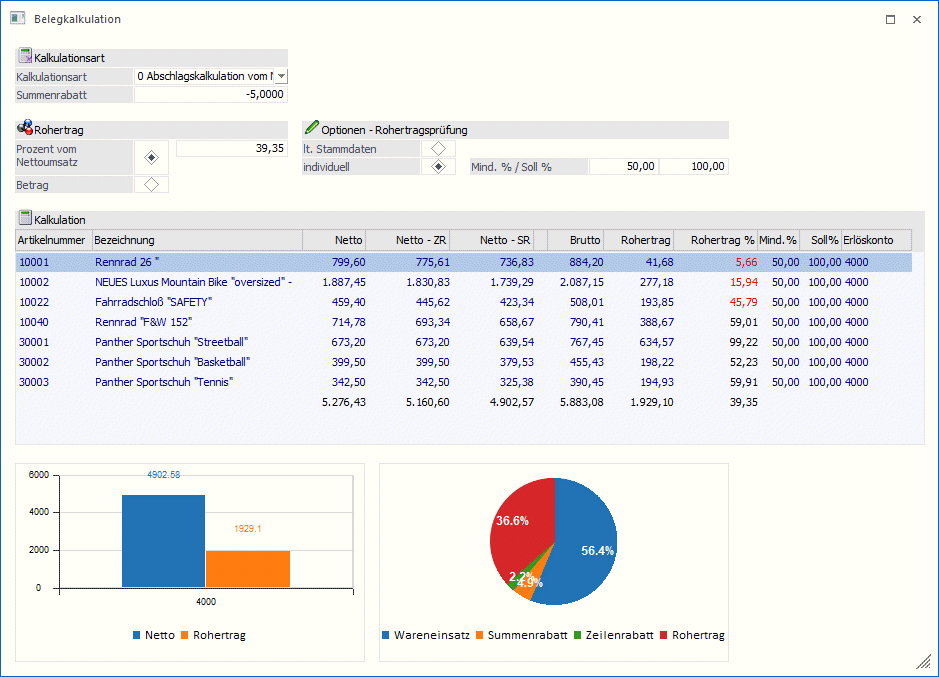
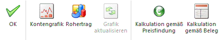
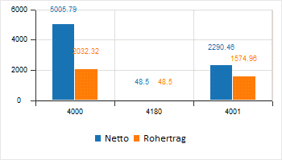
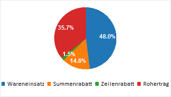

Die Belegkalkulation kann optional bei der Belegerfassung bzw. im Telesales angezeigt werden. Durch Anklicken der Checkbox "Belegkalkulation" im Fenster Belegerfassen im Register Optionen bzw. im Fenster Telesales im Register Optionen wird das Fenster geöffnet. Zusätzlich können in diesem Fenster bzw. als eigene Fenster Grafiken zu den verwendeten Konten und/oder den Rohertragswerten eingeblendet werden. Die Einstellung, ob die Fenster angezeigt werden oder nicht, wird benutzerspezifisch gespeichert.
Mittels rechter Maustaste "Spalten anzeigen/verstecken" kann die Anzeige der Spalten gesteuert werden.

Bei jeder Neueingabe eines Artikels, Änderung der Artikelmenge oder des Artikelpreises oder wenn eine Artikelzeile aus der Belegmitte entfernt wird, wird das Fenster "Belegkalkulation" aktualisiert.
Buttons

Ø Ok
Werden in der Belegkalkulation Werte verändert, so werden sie nach dem Anwählen des OK-Buttons in die Belegmitte übernommen.
Ø Kontengrafik
Durch Anwählen dieses Buttons - dieser bleibt so lange gedrückt bis er erneut angewählt wird - wird im Fenster der Belegkalkulation eine Balkengrafik mit den Nettowerten der verwendeten Erlöskonten sowie des Rohertrages dargestellt.

Ø Rohertrag
Durch Anwählen dieses Buttons - dieser bleibt so lange gedrückt bis er erneut angewählt wird - wird im Fenster der Belegkalkulation eine Tortengrafik mit den Werten Wareneinsatz, Summenrabatt, Zeilenrabatt und Rohertrag dargestellt.

Ø Gafik aktualisieren
Wird dieser Button angewählt, so werden die innerhalb des Fensters "Belegkalkulation" dargestellten Grafiken in eigenen Fenstern dargestellt.